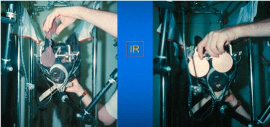
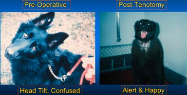
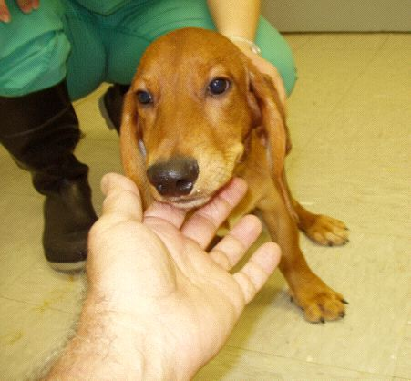
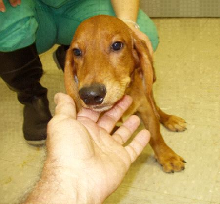
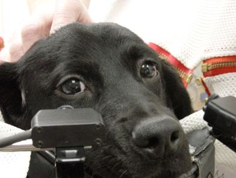
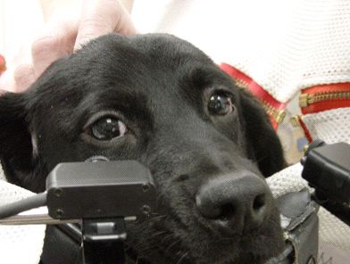

|
COMLAB is the first mobile apparatus designed to record the eye movements of undrugged, unrestrained, and cooperative dogs using non-invaswive methodology. It has been used in two major studies that have resulted in new therapies for children and adults with both ocular motor and primary visual disorders. "Man's best friends" continue their historical role by helping mankind in new ways that complement their legendary loyalty and companionship. Referring to our early research into canine eye movements, the then head of the NEI was reported to have said, "Nothing clinically relevant will come from that research." The historical account below demonsrates the inaccuracy of that flawed opinion (perhaps influenced by the NEI committment to the multi-million dollar support of monkey colonies aceoss the US).
COMLAB History:
In 1991, Dr. Robert Williams of the University of Tennessee, Memphis, contacted Dr. Dell'Osso after noting that members of a family of Belgian sheepdogs born without an optic chiasm had ocular oscillations. He sent a video of these movements to Dr. Dell'Osso for his opinion. The eye movements appeared to be the canine equivalent of childhood nystagmus (i.e., congenital nystagmus, or CN, now called infantile nystagmus syndrome, or INS) with an additional nystagmus, see-saw nystagmus (SSN), superimposed. The only way to confirm that was to record the eye movements of these dogs. However, research of the literature found no mention of canine eye movements, neither the methodology needed nor their characteristics. During an initial visit to Memphis in 1992, Drs. Dell'Osso and Williams made preliminary eye-movement recordings at the University of Tennessee Animal Facility (UTAF) and confirmed both the CN and SSN in the dogs with achiasma. In order to make more accurate eye-movement recordings, Drs. Dell'Osso, Williams, and Jacobs (in 1995) designed and constructed* the Canine Ocular Motility Laboratory (COMLAB), a semi-mobile facility that was based in Memphis in the UTAF for several years while this collaborative study was made.
* To ensure maximum comfort and the absence of stress for the dogs during recordings, they were suspended in a special sling apparatus using body-fitted "corsets" used in veterinary hospitals for dogs undergoing post-surgical recovery. In addition, we constructed muzzle rests from foam-filled, leather-covered umpires masks. These were placed below the dogs' muzzles and allowed them to rest their heads comfortably. As the photos below demonstrate, the COMLAB apparatus can accommodate dogs of all sizes, from small puppies to large adults.
Results of this research:
1. Contrary to all contemporary physiology textbooks, mammals may exist with no optic chiasm (achiasma).
2. Canine achiasma may be diagnosed by the combination of INS and see-saw nystagmus (SSN).
3. Using our canine ocular motor criteria, we first diagnosed achiasma in humans.
In 1997, as the study neared its conclusion, Dr. Dell'Osso enlisted the aid of Dr. Richard Hertle in performing a hypothetical surgery, four-muscle tenotomy and reattachment (T&R), on the last remaining achiasmatic dog.
Results of this research:
1. The hypothesized 4-muscle, horizontal (T&R) surgical procedure damped horizontal INS.
2. The hypothesized 4-muscle, verticalal T&R surgical procedure damped vertical INS and SSN.
3. The success of the T&R surgery (reducing the dog's nystagmus and improving his vision) led to its successful use in humans for both INS and certain forms of acquired nystagmus.
4. Canine T&R surgery led to an effective therapy in humans with previously untreatable conditions (INS without a lateral gaze-angle null and certain forms of acquired nystagmus).
From 1999 - 2002, COMLAB was temporarily relocated to the Animal Facility of the Louis Stokes Cleveland VA Medical Center where Drs. Dell'Osso and Jacobs made improvements, some ocular motility recordings of the remaining members of this family of Belgian sheepdogs, and attampted to breed additional achiasmatic members. During that short period, the eye movements of a small number of dogs, with and without nystagmus, were recorded and the dogs were then adopted out to local families.
Results of this research:
1. The congehital nystagmus in an albino American bulldog was equivalent to human INS.
In 2002, Dr. Jean Bennett of the University of Pennsylbania contacted Dr. Dell'Osso regarding the dogs with Lebers congenital amaurosis (LCA) and nystagmus that she and a multicenter team were attempting to cure with gene therapy. Drs. Dell'Osso and Jacobs moved COMLAB to the University of Pennsylvania, Bolton Large Animal Facility near Philadelphia in order to study the nystagmus and its changes due to gene therapy in these dogs.
Results of this research:
1. The congehital nystagmus in RPE65-deficient Briards was equivalent to human INS.
2. Nystagmus damping in the canine model of LCA, demonstrated the successful application of gene therapy.
3. In human patients, this gene therapy is now preventing the blindness that results from LCA.
In 2012, COMLAB was relocated to the Animal Facility of SUMA Akron City Hospital in Akron OH so that we could collaborate with Dr. Richard Hertle on a study of the effects of a chemical solution, administered as eye drops, on INS. We had two puppies shipped from the Bolton Large Animal Facility near Philadelphia to the SUMA lab. If we demonstrate both safety and efficacy of this chemical eye drop on INS, we may have a new and effective treatment that can be self-administered on an as-needed basis.
Results of this research:
1. The diluted chemical eye drops were safe and effective in the canine model.
2. The safety and effectiveness of chemical eye drops are currently being tested in humans with INS.
Top of page
COMLAB Eye-Movement Data:
During the period from 1992 to 2013, canine eye-movement data in 234 recording sessions from 75 dogs (18+ of which were normal) were recorded using paradigms designed to extract accurately calibrated data from each in the short time usually available when recording dogs. Some dogs were recorded numerous times over several years and their data constitute longitudinal data sets for those dogs. The data files from those sessions compose a valuable, unique storehouse of research data. That data is now being made available to all basic science, medical and veterinary researchers, residents, fellows, and students of canine ocular motility along with the OMtools and NAFX
(Software)
tools necessary for their analysis. These data and their analysis will hopefully allow those unable to actually record canine eye movements to conduct future ocular motor research into nystagmus and normal eye movements in canines.
For a detailed tutorial on recording and analyzing eye-movement data from subjects with nystagmus or other ocular motor disorders, see OMLAB Report #011005
For a detailed tutorial on the use of the NAFX, see OMLAB Report #111005
NOTE: NAFX is part of the 'OMtools' distribution, available through the above link. Some programs require the MATLAB Signal Processing Toolbox.
For questions regarding the use or analysis of this data, email Dr. Dell'Osso at lfd (at) case (dot) edu.
The digitized canine eye-movment data available for downloading from this page is divided into four parts: 1) COMLAB data from achiasmatic mutant Belgian sheepdogs (1992 - 1998); 2) COMLAB data from an American bulldog with congenital nystagmus, recorded in 2000); 3) COMLAB data from RPE65-deficient Briard dogs, recorded from 2002 - 2006; and 4) COMLAB data from normal dogs of various breeds, recorded from 1992 - 2013.
All COMLAB data, published and unpublished (1992 - 2013) may be downloaded from each of the folders listed below. The subject numbers and recording sessions identifying each data set are sequential and chronological, both inter-and intra-subject.
NOTE: All data files have been compressed using the .zip format. They can be opened using StuffIt Expander, or any other archiving package that supports this format.
HINT: Many data files are large, despite having been compressed. It is recommended that downloading only be attempted using a high-speed wi-fi connection and during off-peak hours. Those interested in obtaining the whole canine eye-movement database (>1 GB) should contact Dr. Dell'Osso and request a DVD.
1. All COMLAB data from achiasmatic mutant Belgian sheepdogs (1992 - 1998) may be downloaded from each of the folders listed below. For each subject, recording-session identifiers of each data set are sequential and chronological.
-------> WORK IN POROGRESS (data to be added when available) <--------
Top of page
2. COMLAB data from an American bulldog with congenital nystagmus (2000) may be downloaded from each of the folders listed below. For each subject, recording-session identifiers of each data set are sequential and chronological.
-------> WORK IN POROGRESS (data to be added when available) <--------
Top of page
3. All COMLAB data from RPE65-deficient Briard dogs (2002 - 2006) may be downloaded from each of the folders listed below. The subject numbers and intra-subject recording sessions identifying each data set are sequential and chronological.
-------> WORK IN POROGRESS (data to be added when available) <--------
Top of page
4. All COMLAB data from normal dogs of various breeds (1992 - 2013) may be downloaded from each of the folders listed below. The subject numbers and intra-subject recording sessions identifying each data set are sequential and chronological.
-------> WORK IN POROGRESS (data to be added when available) <--------
Top of page
COMLAB Photos and Videos:
The photos and videos below demonstrate the methodology we developed and employed to record canine eye movements using both infrared and digital video techniques. Also shown are the results of the first T&R surgical procedure applied to damp the infantile nystagmus in an achiasmatic mutant Belgian sheepdog.
NOTE: All photos were taken at either the University of Tennessee Animal Facility, the University of Pennsylvania Large Animal Facility, or the SUMA Animal Research Facility, Akron OH.
 Dr. Dell'Osso's Dog, Copper, Shifting Fixation while Keeping His Head Steady
Dr. Dell'Osso's Dog, Copper, Shifting Fixation while Keeping His Head Steady
Achiasmatic Belgian Sheepdog Study at the University of Tennessee Animal Facility



 
Pre-Tenotomy Ocular Motility Recording <==> Post-Tenotomy Editing Manuscript
| 


 
 


 
